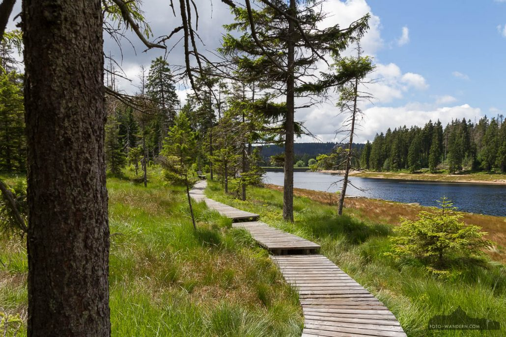
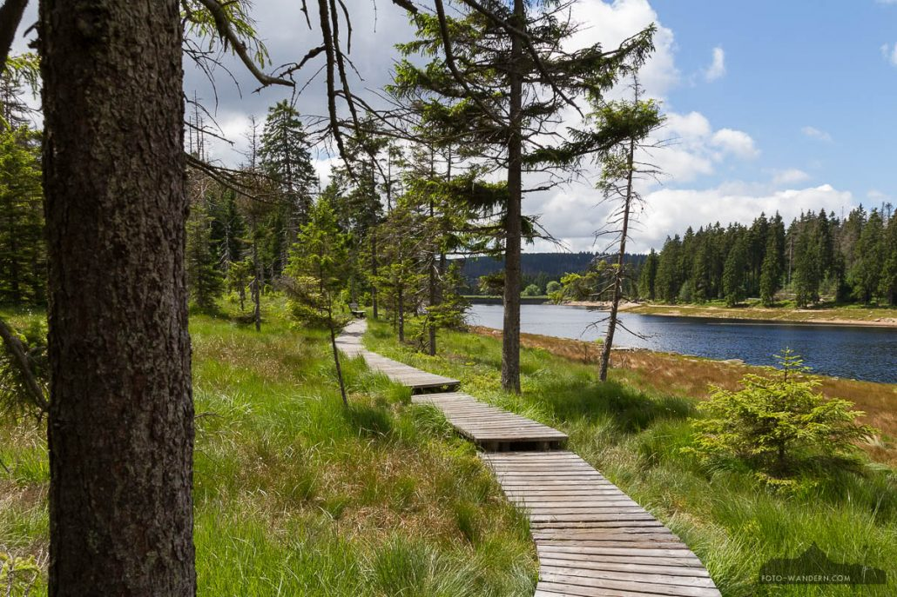

Das Harzer Rotvieh ist eine einfarbig rote Rinderrasse aus dem Harz und gehört wohl zu den ältesten und ursprünglichsten Nutztierrassen.
Hauptsächlich der Unterharz wird agrarisch genutzt.
angebaut wird z.B.
Gerste, Reis, Zuckerrübe und Raps
Im Oberharz wurde früher Silber, Blei, Kupfer und Zink abgebaut.
Heute sind einige Bergbautunnel für Touristen betretbar.
Die vielen Bäume des Harzes ziehen viele Forstunternehmen an.
Weil die natürliche Pflanzenvermehrung nicht reicht, werden oft Bäume nachgepflanzt.
Wenn die Kronen der Bäume zu dicht aneinander stehen, findet eine Durchforstung statt. Gradschaftige Bäume sollen möglichst stehen bleiben. Aus einem Jungbestand von mehreren tausend Bäumen werden nun wenige hundert, aber dafür große Bäume
viele Freizeitaktivitäten:
wandern, schwimmen, tauchen im Nationalpark.
Nachteil: Touristen verursachen Lärm, Müll und Schadstoffe in der Luft.
Lösungsmöglichkeiten: Damit die Leute nicht mit eigenen Autos in den Harz fahren, sollten öffentliche Verkehrsmittel gefördert werden
Dieser Stausee wird als Wasserwerk und Wasserkraftwerk genutzt.
Außerdem ist er für die Regulierung des Wasserhaushalts im Harz und der Umgebung zuständig.
Er dient auch dem Hochwasserschutz.